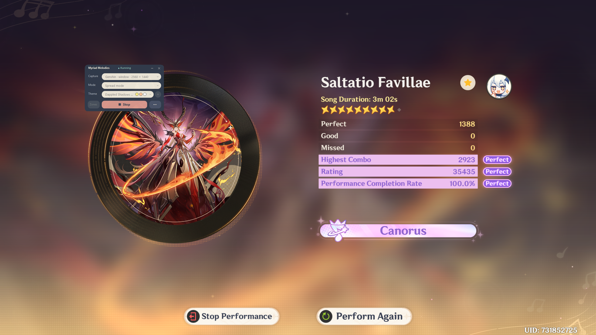
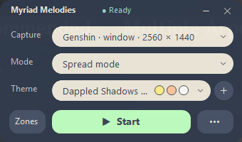
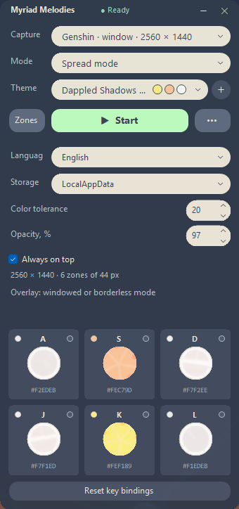

Full version
Works without installing .NET.
Download full EXEGenshin Impact · Windows x64 · MIT
A compact assistant for Repertoire of Myriad Melodies. Capture the game window, recognize notes by color, and play with your assigned keys.



Works without installing .NET.
Download full EXERequires .NET Desktop Runtime 10 x64.
Download compact EXEWindows 10 (version 2004 or later) or Windows 11; x64 only. Release notes and SHA-256 checksums